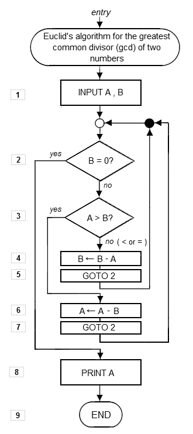

L'algorithmique est l'étude comparative des différents algorithmes. Tous les algorithmes ne se valent pas : le nombre d'opérations nécessaires pour arriver à un même résultat diffère d'un algorithme à l'autre. Ce nombre d'opérations, appelé la complexité algorithmique est le sujet de la théorie de la complexité des algorithmes, qui constitue une préoccupation essentielle en algorithmique.
La complexité algorithmique sert en particulier à déterminer comment le nombre d'opérations nécessaires évolue en fonction du nombre d'éléments à traiter (la taille des données) :
Nous arrivons maintenant à un problème ouvert fondamental en informatique : « P est-il égal à NP ? ». En simplifiant beaucoup : P est « l'ensemble des problèmes pour lesquels on connaît un algorithme efficace » et NP « l'ensemble des problèmes pour lesquels on connaît un algorithme efficace pour vérifier une solution à ce problème ». Et en simplifiant encore plus : existe-t-il des problèmes difficiles ? Des problèmes pour lesquels il n'existe pas d'algorithme efficace ?
Cette question est non seulement d'un grand intérêt théorique mais aussi pratique. En effet, un grand nombre de problématiques courantes et utiles sont des problèmes que l'on ne sait pas résoudre de manière efficace. C'est d'ailleurs un des problèmes du prix du millénaire et le Clay Mathematics Institute s'est engagé à verser un million de dollars aux personnes qui en trouveraient la solution.
C'est un problème ouvert, donc formellement, il n'y a pas de réponse reconnue. Mais, en pratique, la plupart des spécialistes[réf. nécessaire] s'accordent pour penser que P≠NP, c'est-à-dire qu'il existe effectivement des problèmes difficiles qui n'admettent pas d'algorithme efficace.
Ce type de problème de complexité algorithmique est directement utilisé en cryptologie. En effet, les méthodes de cryptologie modernes reposent sur l'existence d'une fonction facile à calculer qui possède une fonction réciproque difficile à calculer. C'est ce qui permet de chiffrer un message qui sera difficile à décrypter (sans la clé).
La plupart des chiffrements (méthode de cryptographie) reposent sur le fait que la procédure de Décomposition en produit de facteurs premiers n'a pas d'algorithme efficace connu. Si quelqu'un trouvait un tel algorithme, il serait capable de décrypter la plupart des cryptogrammes facilement. On sait d'ailleurs qu'un calculateur quantique en serait capable, mais ce genre d'ordinateur n'existe pas, en tout cas pour le moment.